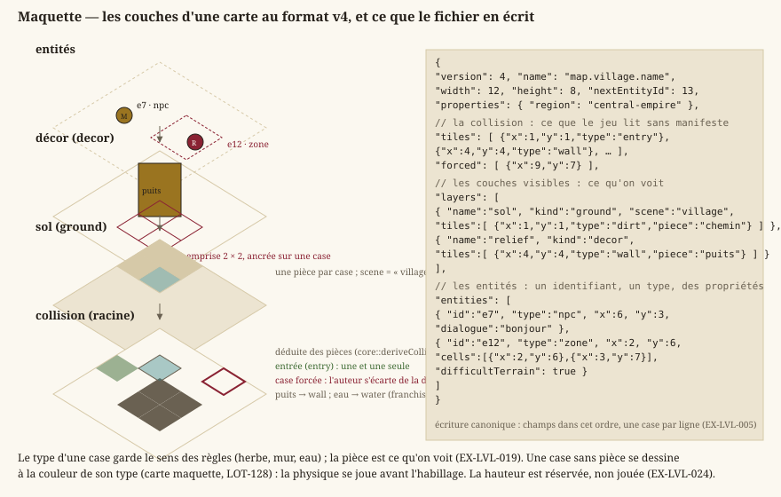

Cartes & format
Statut : livré. Format JSON versionné (version 4 depuis le
LOT-EDITOR-12), chargement, validation, couches à pièces nommées, collision déduite et cases forcées, entités à identifiant, zones peintes, variantes ; le Colisée et deux quartiers de la Capitale sont livrés dans ce format. Dépend degameplay.md. Schéma publié :Documentation/Specification/level.schema.json.
1. Représentation des cartes
Une carte est faite de couches empilées et d'une collision qui, elle, n'est pas une couche comme les autres : elle se déduit des pièces posées, et l'auteur ne la corrige qu'au cas par cas. La maquette montre cet empilement et, en regard, ce que le fichier en écrit.
{kind=link}

Deux idées de ce dessin commandent tout le reste du document : le type d'une case porte le sens des règles — herbe, mur, eau —, tandis que la pièce ne porte que ce qu'on voit ; et la collision se déduit, si bien qu'une carte reste jouable avant d'être habillée.
- EX-LVL-001 — Une carte doit être décrite par un fichier de données externe (pas en dur dans le code), placé dans
Source/Elements/Levels. - EX-LVL-002 — Le format doit décrire au minimum : dimensions de la grille, type de chaque tuile, position d'entrée, couches visibles et entités.
- EX-LVL-003 — Le format retenu est un JSON structuré orienté objets : une carte est un objet JSON portant ses métadonnées (nom, dimensions) et une liste de tuiles, chaque tuile étant un objet
{x, y, type, …}(les cases vides sont omises) pouvant porter des champs propres (la pièce nommée par une case de couche,"piece",EX-LVL-019). Choisi pour un format extensible (données riches par tuile, round-trip d'éditeur direct), au prix d'une lisibilité « à l'œil » moindre qu'une grille ASCII — l'édition passe par l'éditeur, pas par le texte brut. - EX-LVL-005 — Le fichier de carte doit porter un numéro de version de format, afin qu'une évolution non rétrocompatible soit détectée plutôt que subie. Un fichier sans numéro de version est lu comme la version initiale, sans erreur ni avertissement ; une version supérieure à celle gérée est refusée avec un message explicite. Toute version passée se lit pour toujours (une fixture par version reste dans les tests) ; la conversion est un acte explicite (
LevelEditor --migrate,EX-EDIT-062), jamais l'effet de bord d'un enregistrement ; l'écriture est canonique : charger puis enregistrer une carte intacte rend le même fichier, octet pour octet. - EX-LVL-004 — Le chargement d'une carte doit valider les données (positions des tuiles et des entités dans les bornes
width × height, une seule tuile par case, une et une seule entrée, types de tuile connus) et signaler une erreur exploitable en cas de fichier invalide (cf. politique d'erreurs des conventions). - EX-LVL-016 — Une carte doit porter N couches de tuiles typées plutôt qu'une grille unique : un RPG en vue de dessus superpose un sol (herbe, dalle, eau), un décor (arbre, tonneau, tapis) et une collision — masque indépendant du visuel, un tapis se traverse et un tonneau non. La grille de collision d'une carte est son tableau racine
tiles, celui qui porte déjà l'entrée — déduite des couches visibles depuis la v4 (EX-LVL-020) : le tableaulayersne décrit que les couches visibles, et une couche de rôlecollisionqui y serait déclarée est refusée — deux grilles à tenir d'accord se désynchronisent, et c'est celle qu'on ne voit pas qui gagne. Au chargement, la grille racine est promue en couche de tête, pour que tout consommateur boucle sur les couches sans cas particulier. Un fichier sans tableaulayersse charge, sa grille promue en couche unique dite legacy, à la fois décor et collision. Concrétisé enLOT-04. - EX-LVL-017 — Une carte doit porter une liste d'entités — PNJ, coffres, panneaux, portails, rencontres — distincte de ses grilles : une entité est un objet à type libre, placé sur une case et porteur de ses propres données, là où une grille ne retient qu'un type par case. Le type n'est pas interprété au chargement — c'est le gameplay qui lui donne un sens — mais la position est validée comme celle d'une tuile (
EX-LVL-004). Concrétisé enLOT-04. - EX-LVL-018 — Une couche et une entité doivent pouvoir porter un dictionnaire de propriétés libres, et tout champ inconnu du chargeur doit y être rangé : ignoré sans erreur à la lecture, et réémis à l'écriture. Sans quoi le moindre besoin découvert plus tard — terrain difficile, couverture, hauteur, dialogue d'un PNJ — imposerait une nouvelle version de format et la migration de tout le contenu déjà produit. Concrétisé en
LOT-04.
Format v4 (LOT-EDITOR-12)
La seule révision de format du module éditeur, faite tant qu'il n'y avait que trois cartes.
- EX-LVL-019 — Chaque case d'une couche visible porte son type et une pièce facultative de la planche du lieu (
"piece"). Le type ne garde qu'un sens, celui des règles et du générateur ; la pièce est ce qu'on voit, et la table d'apparence du lieu n'en est que le défaut (cartes générées, case sans pièce). Une pièce large est ancrée sur une case et occupe son emprise vers les colonnes et lignes croissantes ; elle se trie au pied de son emprise (core::footprintCells, une seule règle, lue par la composition du jeu et par la déduction de collision). Une pièce se cite par son nom courant ou par un ancien nom (aliasesdu manifeste) ; une pièce introuvable reste dans le fichier. - EX-LVL-020 — La grille de collision est écrite dans le fichier — le jeu la lit sans manifeste — et égale à sa déduction (
core::deriveCollision) hors des cases que l'auteur a forcées ("forced"). La déduction prend, case par case, la contribution la plus forte du type tactique de chaque pièce qui la couvre (tacticalau manifeste :open,difficult,cover,obstacle,solid), de la règle du type d'une case sans pièce, et fait d'une case que rien ne couvre un mur. Gêne et abri ne sont pas encore joués depuis une pièce : déduits franchissables, signalés par le contrôle. - EX-LVL-021 — Chaque entité porte un identifiant court (
"id"), unique dans la carte, donné par l'éditeur et jamais réemployé (compteur"nextEntityId") : quêtes, drapeaux et sauvegardes citent une entité parcarte#id, pas par sa case. Deux entités du même identifiant sont refusées au chargement. - EX-LVL-022 — Une zone (
"type": "zone") est un rectangle (width×heightdepuis sa case) ou un ensemble de cases peint ("cells") ; ses propriétés s'appliquent à chaque case couverte, etcore::BattleGrid::zonesAtlit les deux formes. - EX-LVL-023 — Une carte peut être la variante d'une autre (
"base") : elle ne porte aucune case, reprend celles de sa base, change de planche ("scene") et porte ses propres entités. Sa base se cherche du dossier de la variante vers la racine ; une base elle-même variante est refusée. - EX-LVL-024 — La hauteur est réservée :
"floor"par couche,"elevation"par case de couche et par entité, lus, gardés et réécrits ; ni le jeu ni l'éditeur ne s'en servent, et le contrôle signale toute valeur non nulle.
Format retenu (JSON, liste de tuiles-objets)
Types de tuiles : entry (entrée, point d'arrivée par défaut), solid (matière pleine), et le terrain du RPG (EX-EXP-005) — grass, dirt, sand, water, deepWater (sols ; l'eau profonde bloque), wall, cliff (obstacles), bridge, stairs (passages). Une case vide n'est pas listée (absence = vide).
Une case de couche peut nommer sa pièce ("piece", EX-LVL-019), la pièce de la planche du lieu (EX-VIS-008) dessinée sur cette case. Une carte v3 portait cette pièce sur la grille racine ("texture") : le chargeur la range sur la couche de décor, et une v4 qui en porte encore une est refusée. Écriture canonique : champs dans cet ordre, une case par ligne.
{
"version": 4,
"name": "Village",
"width": 12,
"height": 8,
"nextEntityId": 3,
"tiles": [
{"x": 1, "y": 1, "type": "entry"},
{"x": 4, "y": 4, "type": "wall"}
],
"forced": [
{"x": 9, "y": 7}
],
"layers": [
{
"name": "sol",
"kind": "ground",
"scene": "village",
"tiles": [
{"x": 1, "y": 1, "type": "dirt", "piece": "chemin"}
]
},
{
"name": "relief",
"kind": "decor",
"tiles": [
{"x": 4, "y": 4, "type": "wall", "piece": "puits"}
]
}
],
"entities": [
{
"id": "e1",
"type": "npc",
"x": 6,
"y": 3,
"dialogue": "bonjour"
},
{
"id": "e2",
"type": "zone",
"x": 2,
"y": 6,
"cells": [
{"x": 2, "y": 6},
{"x": 3, "y": 7}
],
"difficultTerrain": true
}
]
}Une variante ne porte que version, name, base, scene, nextEntityId et entities (EX-LVL-023). Rôles de couche reconnus : ground, decor, et legacy (rôle de la grille racine promue, jamais écrit) ; un rôle inconnu retombe sur ground plutôt que de faire échouer la carte (EX-NFR-040), et collision déclaré est refusé (EX-LVL-016). La propriété de couche scene nomme le lieu dont la carte porte les planches (Assets/Scene/<lieu>/).
Familles d'entités posées par l'éditeur (LOT-11, EX-EDIT-050). Le chargeur ne connaît aucun type d'entité (EX-NFR-040) ; l'éditeur, lui, sait poser et renseigner ceux que le gameplay lit, rassemblés dans core::knownEntityKinds (Source/Core/World/EntityKinds.h) :
type | Propriétés | Lue par |
|---|---|---|
chest | — | core::knownInteractableKinds (LOT-10) |
sign | — | core::knownInteractableKinds (LOT-10) |
npc | dialogue, figure (figurine de l'atelier), guards (fiche de lieu du quartier gardé) | core::dialogueTriggerFor (LOT-15), rendu du lieu |
encounter | encounterId (requis), respawns (booléen) | core::encounterTriggerFor (LOT-18) |
portal | targetMap, arrival — requis ; requiresFlag | graphe du monde (LOT-09) |
spawnPoint | name (requis, unique dans la carte) | graphe du monde (LOT-09) |
combatZone | name, width, height — requis | découpe de la grille de combat (LOT-09) |
cityBlock | name, width, height — requis | plan de ville (LOT-96) |
arenaEntry | side (allies ou enemies), rank (entier, au moins 1) | core::arenaEntryPoints (LOT-50) |
zone | width, height (rectangle) ou cells (peinte) ; name, difficultTerrain | core::BattleGrid::zonesAt (LOT-EDITOR-12) |
route | name (requis), loop (booléen, une ronde) ; ses points dans cells, dans l'ordre | personne encore : le LOT-70 et le LOT-82 (LOT-EDITOR-05) |
Chaque famille déclare aussi sa forme sur la carte — point, rectangle (width × height, au moins 1), zone rectangle ou peinte, trajet —, la propriété que l'éditeur écrit à côté d'elle et celle qui nomme sa figurine : l'éditeur les dessine et les manipule par là, sans code par famille (EX-EDIT-070). Toute famille que le jeu lit doit être dans la table ; un test bloquant le vérifie (EX-EDIT-073).
L'identifiant d'une carte est le chemin de son fichier sous Source/Elements/Levels/, sans extension (coliseum, capital/martpart). Un portail désigne sa destination par (carte, point d'arrivée nommé), jamais par des coordonnées, qui se désynchroniseraient au premier redimensionnement de la carte cible (EX-EDIT-052) :
{ "type": "portal", "x": 11, "y": 4, "targetMap": "foret", "arrival": "lisiere-est" }
{ "type": "spawnPoint", "x": 1, "y": 4, "name": "porte-ouest" }Coordonnées x = colonne, y = ligne, origine haut-gauche ; toute tuile hors des bornes width × height est invalide.
2. Conception (lignes directrices)
- Chaque carte doit être franchissable : aucune zone jouable ne doit être inatteignable.
- Aucune situation sans issue : un portail mène toujours quelque part, et l'on peut revenir.
- Toute carte doit être un terrain tactique valide (
EX-EDIT-054) : le combat se joue dessus.
Exigences retirées
Ancres conservées, jamais renumérotées : les lots livrés s'y réfèrent. Les six premières décrivaient une campagne de tableaux ordonnés ; le jeu est un bac à sable, relié par le graphe de cartes du
LOT-09et retenu par la sauvegarde duLOT-17.
- EX-LVL-010 (retirée en
LOT-67) — ordre de chargement des niveaux. - EX-LVL-011 (retirée en
LOT-67) — enchaînement automatique des niveaux. - EX-LVL-012 (retirée en
LOT-67) — niveaux de démonstration à difficulté croissante. - EX-LVL-013 (retirée en
LOT-67) — séquence de niveaux en donnée de contenu. - EX-LVL-014 (retirée en
LOT-67, remplacée par la sauvegarde duLOT-17) — progression par tableau. - EX-LVL-015 (retirée en
LOT-67, reprise par leLOT-49) — couverture de toutes les mécaniques par le contenu livré. - EX-LVL-006 (retirée au
LOT-88) — mode de cadrage de caméra par niveau. - EX-LVL-007 (retirée au
LOT-88) — zones de caméra dessinées à la main. - EX-LVL-008 (retirée au
LOT-88) — route des plateformes mobiles et capacités par niveau. - EX-LVL-009 (retirée au
LOT-88) — liste des plans picturaux et parallaxe.
Traçabilité
Le chargement et la validation relèvent de Source/Core (core::LevelLoader, core::LevelWriter, core::deriveCollision) ; la migration et le contrôle de toutes les cartes, de l'éditeur (LevelEditor --migrate, --check, EX-EDIT-062) ; les fichiers de cartes sont dans Source/Elements/Levels. Types de tuiles : gameplay.md ; exploration : exploration.md.